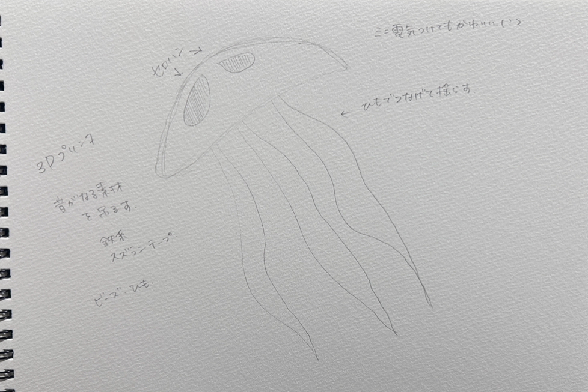
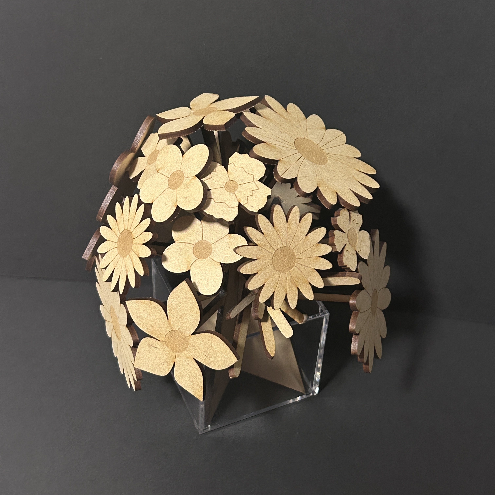
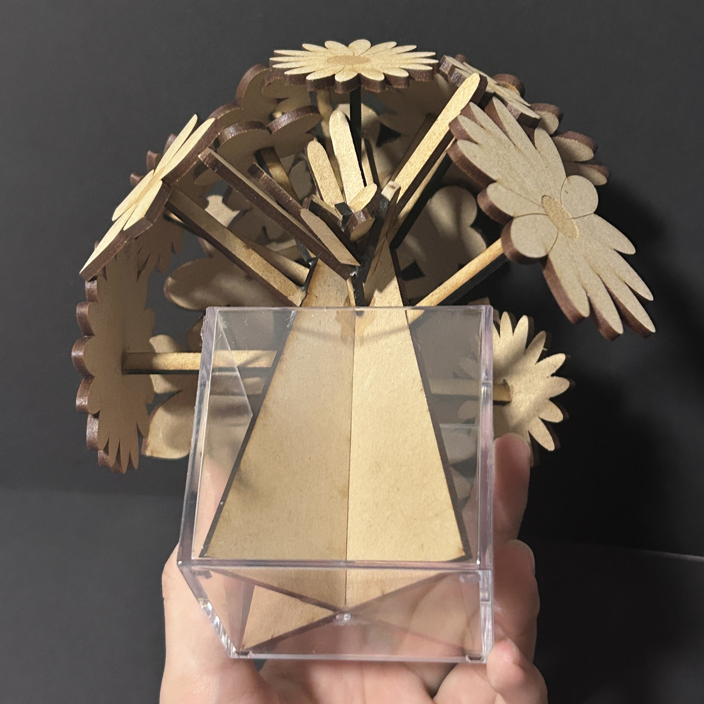

動機：癒されるものを作りたいと思い、窓に吊るして光や音を楽しめるものにしようと考えた結果クラゲがいいのではないかと思った。
制作過程
デッサン：

使用アプリ：fusion360,UltiMaker Cura
fusion設計図：


完成品：


軸に花がついた枝を接着剤でつなげた

反省点：fusionでスケッチを分けてかいてしまっていたので一つのスケッチにすることに時間をかけてしまった、またillustratorでの編集は初めてだったこともあり操作方法に慣れるのに時間がかかってしまったことや線が多く複雑なところが多かった。